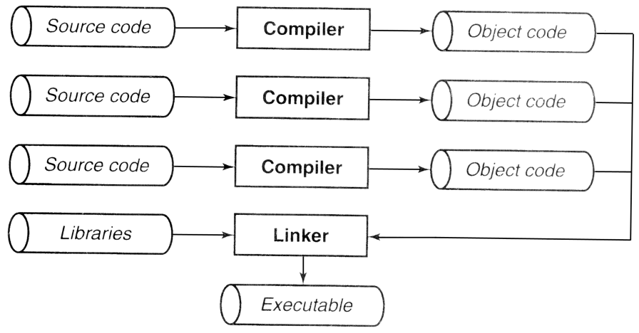

Capítulo 2 Conceptos básicos
No hay duda de que aprender los conceptos básicos de un lenguaje de programación no es tan divertido como escribir programas. Sin embargo, no conocer los conceptos básicos del idioma puede hacer que te pierdas la diversión al escribir programas.
2.1 Medio ambiente
En cualquier implementación de ANSI C, hay dos entornos diferentes . El primero es el entorno de traducción , en el que el código fuente se convierte en instrucciones ejecutables de la máquina. El No. 2 es un entorno de ejecución ( entorno de ejecución), que se utiliza para ejecutar el código real. El estándar establece claramente que estos dos entornos no tienen que estar en la misma máquina. Por ejemplo, un compilador cruzado se ejecuta en una máquina, pero el código ejecutable que genera se ejecuta en diferentes tipos de máquinas. El sistema operativo es el mismo. El estándar también discutió el entorno independiente ( entorno independiente), es el entorno del sistema operativo no existe. Puede encontrar este tipo de entorno en un sistema integrado (como un controlador de horno microondas).
2.1.1 Traducción
La etapa de traducción consta de varios pasos, y cada archivo de origen (puede haber varios) que componen un programa se convierte respectivamente en código objeto a través del proceso de compilación . Luego, cada uno de los archivos de objeto del paquete de vinculadores (Vinculador) juntos forman un programa ejecutable único y completo. El enlazador también introducirá cualquier función utilizada por el programa en la biblioteca de funciones estándar de C, y también puede buscar en la biblioteca personal del programador y vincular las funciones que deben usarse en el programa. La figura 2.1 describe este proceso.

Figura 2.1 Proceso de compilación
El proceso de compilación en sí también consta de varias etapas, la primera es el procesamiento del preprocesador (preprocesador). En esta etapa, el preprocesador realiza algunas operaciones de texto en el código fuente. Por ejemplo, reemplace los símbolos definidos por la directiva #define con valores reales y lea el contenido del archivo incluido por la directiva #include.
Luego, se analiza el código fuente para determinar el significado de sus declaraciones. La segunda etapa es donde se generan la mayoría de los mensajes de error y advertencia. Posteriormente, se genera el código de destino. El código objeto es la forma preliminar de las instrucciones de la máquina, que se utiliza para implementar las declaraciones del programa. Si agregamos opciones que requieren optimización a la línea de comando del compilador, el optimizador procesará aún más el código de destino para hacerlo más eficiente. El proceso de optimización requiere tiempo adicional, por lo que este proceso generalmente no se realiza hasta que el programa está depurado y listo para producir un producto formal. No es importante para nosotros si el código de destino se genera directamente o existe en forma de declaraciones en lenguaje ensamblador y luego se compila en un archivo de destino a través de una etapa independiente.
1. Convención de nombre de archivo
Aunque el estándar no establece reglas de nomenclatura de archivos, la mayoría de los entornos tienen convenciones de nomenclatura de archivos que debe seguir. El código fuente de C generalmente se almacena en un archivo con extensión .c. Los archivos incluidos en el código fuente de C por la directiva #include se denominan archivos de encabezado y generalmente tienen la extensión .h.
En cuanto al nombre del archivo de destino, diferentes entornos pueden tener diferentes convenciones. Por ejemplo, en sistemas UNIX, su extensión es .o, pero en sistemas MS-DOS, su extensión es .obj.
Dos, compilar y vincular
Los comandos específicos que se utilizan para compilar y vincular programas en C varían de un sistema a otro, pero muchos son similares a los dos sistemas descritos aquí. En la mayoría de los sistemas UNIX, el compilador de C se llama cc y se puede invocar de muchas formas diferentes.
1. Compile y vincule un programa en C completamente contenido en un archivo fuente:
cc program.cEste comando produce un programa ejecutable llamado a.out. Se generará un archivo de destino llamado program.o en el medio, pero se eliminará una vez que se complete el proceso de vinculación.
2. Compile y vincule varios archivos fuente C:
cc main.c sort.c lookup.cCuando se compila más de un archivo de origen, el archivo de destino no se eliminará. Esto le permite modificar el programa y volver a compilar solo los archivos fuente que se han modificado, como se muestra en el siguiente comando.
3. Compile un archivo fuente en C y vincúlelo con el archivo objeto existente:
cc main.o lookup.o sort.c4. Compile un solo archivo fuente en C y genere un archivo objeto (program.o en este ejemplo), que se vinculará más adelante:
cc –c program.c5. Compile varios archivos fuente C y genere un archivo objeto para cada archivo:
cc –c main.c sort.c lookup.c6. Vincular varios archivos de destino:
cc main.o sort.o lookup.oLos comandos anteriores que pueden generar programas ejecutables se pueden agregar con la opción "-o nombre", que permite al enlazador guardar el programa ejecutable en el archivo "nombre" en lugar de "a.out". De forma predeterminada, el vinculador busca en la biblioteca C estándar. Si agrega el indicador "-lname" al compilar, el vinculador buscará en la biblioteca "nombre" al mismo tiempo. Esta opción debería aparecer al final de la línea de comando. Además, hay muchas opciones para compilar y vincular comandos, consulte la documentación del sistema que está utilizando.
Borland C / C ++ 5.0 para MS-DOS y Windows tiene dos interfaces de usuario, entre las que puede elegir. El entorno de desarrollo integrado de Windows es una herramienta de programación independiente completa, que incluye un editor de código fuente, un depurador y un compilador. Su uso específico está más allá del alcance de este libro. La interfaz de línea de comandos de MS-DOS no es muy diferente del compilador de UNIX, excepto por los siguientes puntos:
1. Su nombre es bcc.
2. El nombre del archivo de destino es file.obj.
3. Cuando se compila y se vincula un solo archivo fuente, el compilador no elimina el archivo objeto.
4. De forma predeterminada, el archivo ejecutable recibe el nombre del primer archivo de origen o de destino en la línea de comandos, pero puede usar la opción "-ename" para nombrar el archivo de programa ejecutable "name.exe".
2.1.2 Ejecución
El proceso de ejecución del programa también debe pasar por varias etapas. Primero, el programa debe cargarse en la memoria. En un entorno host (es decir, un entorno con un sistema operativo), el sistema operativo completa esta tarea. Aquellas variables que aún no se han inicializado y que no están almacenadas en la pila obtendrán sus valores iniciales en este momento. En un entorno autónomo, la carga del programa debe organizarse manualmente o puede realizarse colocando el código ejecutable en una memoria de solo lectura (ROM).
Entonces, comienza la ejecución del programa. En el entorno de host, normalmente un pequeño programa de inicio está vinculado con el programa. Es responsable de manejar una serie de asuntos diarios, como recopilar parámetros de filas con nombre para que el programa pueda acceder a ellos. Entonces, se llama a la función principal.
Ahora, se ejecutará el código del programa. En la mayoría de las máquinas, el programa utilizará una pila en tiempo de ejecución (pila), que se utiliza para almacenar variables locales y direcciones de retorno de funciones. El programa también puede usar memoria estática , y las variables almacenadas en la memoria estática conservarán sus valores durante la ejecución del programa.
La etapa final de la ejecución del programa es la terminación del programa, que puede deberse a muchas razones diferentes. La terminación "normal" significa que la función principal devuelve [1] . Algunos entornos de ejecución permiten que el programa devuelva un código que indica por qué dejó de ejecutarse. En el entorno de host, el programa de inicio volverá a tomar el control y puede realizar varias tareas diarias, como cerrar cualquier archivo que el programa haya utilizado pero que no haya cerrado explícitamente. Además, el programa también puede ser terminado debido a que el usuario presiona el botón de interrupción o la conexión telefónica está suspendida, o puede ser interrumpido por sí mismo debido a un error en el proceso de ejecución.
2.2 Reglas léxicas
Reglas léxicas como las reglas de ortografía en inglés, ¿cómo decide formar un segmento de caracteres separado en el programa de origen, que está etiquetado (token)?
Un programa ANSI C consta de declaraciones y funciones. La función define el trabajo que debe realizarse y la declaración describe la función y / o el tipo de datos (a veces los datos en sí) sobre los que operará la función. Los comentarios pueden estar dispersos en varios lugares del archivo de origen.
2.2.1 Personajes
El estándar no estipula qué juego de caracteres específico debe usarse en el entorno C, pero estipula que el juego de caracteres debe incluir todas las letras mayúsculas y minúsculas del inglés, los números del 0 al 9 y los siguientes símbolos:
! " # % ' ( ) * + , - . / :
; < > = ? [ ] \ ^ _ { } | ~El carácter de nueva línea se utiliza para marcar el final de cada línea de código fuente. Cuando la entrada de caracteres del programa que se está ejecutando está lista, también se utiliza para marcar el final de cada línea de entrada. Si lo requiere el entorno de ejecución, el carácter de nueva línea también puede ser una cadena de caracteres, pero se tratan como un solo carácter. El conjunto de caracteres también debe incluir espacios, tabulaciones horizontales, tabulaciones verticales y caracteres de retroalimentación de formato. Estos caracteres más los saltos de línea generalmente se denominan caracteres en blanco, porque cuando se imprimen, aparecen espacios en blanco en lugar de varias marcas en la página.
El estándar también define varias palabras de tres letras (trigrph) Una palabra de tres letras es una secuencia de varios caracteres, que juntos representan otro carácter. Las palabras de tres letras permiten implementar el entorno C en ciertos conjuntos de caracteres que carecen de algunos caracteres obligatorios. Aquí hay algunas palabras de tres letras y los caracteres que representan.
??( [ ??< { ??= #
??) ] ??> } ??/ \
??! | ??’ ^ ??- ~El comienzo de dos signos de interrogación seguidos de un carácter generalmente no aparece en otras formas de expresión, por lo que las palabras de tres letras se expresan en esta forma, para no causar malentendidos.
advertir:
Aunque las palabras de tres letras son útiles en ciertos entornos, en realidad es una cosita molesta para quienes no la necesitan. La razón por la que se elige esta secuencia como el comienzo de cada palabra de tres letras es porque aparecen en una forma antinatural, pero aún esconden peligro. Por lo general, no tiene en mente el concepto de palabras de tres letras, porque rara vez aparecen. Entonces, cuando escribe una palabra de tres letras ocasionalmente, así:
printf("Delete file (are you really sure??): " );La salida resultante producirá] caracteres, que sin duda te sorprenderán.
Cuando escribe algún código fuente en C, desea utilizar un determinado carácter en algunos contextos, pero es posible que no pueda hacerlo, porque el carácter tiene un significado especial en este entorno. Por ejemplo, las comillas dobles "se utilizan para delimitar las constantes de cadena. ¿Cómo se incluyen comillas dobles dentro de una constante de cadena? K&R C define varias secuencias de escape o caracteres de escape . Utilice Para solucionar este problema. ANSI C agrega varias secuencias de escape a it. La secuencia de escape consiste en una barra invertida \ más uno o más caracteres. Cada secuencia de escape listada a continuación representa El carácter después de la barra invertida no agrega un significado especial a este carácter.
\? Se utiliza al escribir varios signos de interrogación seguidos para evitar que se interpreten como palabras de tres letras.
\ "se utiliza para denotar las comillas dobles dentro de una constante de cadena.
\ 'se utiliza para representar constantes de caracteres'.
\\ Se utiliza para indicar una barra invertida para evitar que se
interprete como un carácter de secuencia de escape.
Hay muchos caracteres que no aparecen en el código fuente, pero son muy útiles al formatear la salida del programa o manipular las pantallas del terminal. El lenguaje C también proporciona algunos caracteres de escape en esta área, por lo que puede incluirlos en su programa. Al seleccionar los caracteres de estos caracteres de escape, consideramos especialmente si ayudan a memorizar la función de los personajes que representan.
K&R C:
Algunos de los siguientes caracteres de escape están marcados con un símbolo "†", lo que indica que ANSI C los agregó recientemente y no están implementados en K&R C.
\ a † Carácter de advertencia. Tocará el timbre de la terminal o producirá alguna otra señal audible o visible.
\ b Tecla de retroceso.
\ f Carácter de alimentación de papel.
\ n Carácter de nueva línea.
\ r Retorno de carro.
\ t Carácter de tabulación horizontal.
\ v † Carácter de tabulación vertical.
\ ddd ddd representa de 1 a 3 dígitos octales. El carácter representado por este carácter de escape es el carácter representado por el valor octal dado.
\ xddd † es similar al ejemplo anterior, excepto que el número octal se reemplaza por un número hexadecimal.
Tenga en cuenta que se puede incluir cualquier número hexadecimal en la secuencia \ xddd, pero si el tamaño del valor del resultado excede el rango del carácter, el resultado no está definido.
2.2.2 Notas
Los comentarios en lenguaje C comienzan con el carácter / * y terminan con el carácter * /, y pueden contener cualquier carácter excepto * /. En el código fuente, un comentario puede abarcar varias líneas, pero no se puede anidar dentro de otro comentario. Tenga en cuenta que si / * o * / aparece dentro del literal de cadena, ya no funciona como delimitador de comentarios.
El preprocesador eliminará todos los comentarios y los reemplazará por un espacio. Por lo tanto, los comentarios pueden aparecer donde puedan aparecer espacios.
advertir:
El comentario comienza desde el carácter de inicio / inicio del comentario hasta el terminador / final del comentario , y todo lo que se encuentra en el medio se considera el contenido del comentario. Esta regla parece obvia de un vistazo, pero para los estudiantes que escribieron el siguiente código de apariencia inocente, este no es necesariamente el caso. ¿Puedes ver por qué solo se inicializa la primera variable?
x1=0; /***********************
x2=0; **Initialize the **
x3=0; **counter variables. **
x4=0; ***********************/advertir:
Tenga en cuenta que el comentario de parada es * / en lugar de *? . Si presiona las teclas demasiado rápido o mantiene presionada la tecla Mayús durante demasiado tiempo, es posible que ingrese por error la última. Este error es evidente de un vistazo después de que se señala, pero es difícil encontrar un error de este tipo en un programa real.
2.2.3 Código fuente de forma libre
C es un lenguaje de forma libre, es decir, no hay reglas que estipulen dónde se pueden escribir los enunciados, cuántos enunciados pueden aparecer en una línea, dónde se debe dejar en blanco y cuántos espacios en blanco deben aparecer [2] . La única regla es que deben aparecer uno o más caracteres en blanco (o comentarios) entre etiquetas adyacentes; de lo contrario, pueden interpretarse como una sola etiqueta. Por lo tanto, las siguientes declaraciones son equivalentes:
y=x+1;
y = x + 1;
y = x
+
1En cuanto al siguiente conjunto de declaraciones, las primeras tres declaraciones son equivalentes, pero la cuarta declaración es ilegal:
int
x;
int x;
int/*comment*/x;
intx;Esta extrema libertad de escritura de código tiene pros y contras. Pronto escucharás algunas filosofías de tribuna sobre este tema.
2.2.4 Identificador
Los identificadores son los nombres de variables, funciones, tipos, etc. Se componen de letras mayúsculas y minúsculas, números y guiones bajos, pero no pueden comenzar con un número. C es un lenguaje que distingue entre mayúsculas y minúsculas, por lo que abc, Abc, abC y ABC son 4 identificadores diferentes. No hay límite para la longitud del identificador, pero el estándar permite que el compilador ignore los caracteres después del 31º carácter. El estándar también permite al compilador restringir los identificadores utilizados para representar nombres externos (es decir, nombres manipulados por el enlazador) para reconocer solo los primeros seis caracteres que no distinguen entre mayúsculas y minúsculas.
Las siguientes palabras clave en lenguaje C están reservadas, no se pueden utilizar como identificadores:
auto do goto signed unsigned
break double if sizeof void
case else int static volatile
char enum long struct while
const extern register switch
continue float return typedef
default for short union2.2.5 La forma del programa
Un programa en C puede almacenarse en uno o más archivos fuente. Aunque un archivo fuente puede contener más de una función, cada función debe aparecer completamente en el mismo archivo fuente [3] . El estándar no lo estipula claramente, pero el archivo fuente de un programa en C debe contener un grupo de funciones relacionadas, que es una forma de organización más razonable. Este enfoque tiene una ventaja adicional, es decir, permite implementar tipos de datos abstractos.
2.3 Estilo de programa
Aquí hay algunos comentarios sobre el estilo de programación en orden. Un lenguaje de forma libre como C puede producir fácilmente programas descuidados, que son programas que son rápidos y fáciles de escribir pero difíciles de leer y comprender más tarde. Las personas generalmente usan señales visuales para leer, por lo que si su código fuente está en orden, ayudará a otros a leerlo más tarde (la persona que lo lea probablemente sea usted mismo). El procedimiento 2.1 es un ejemplo, aunque un poco extremo, ilustra el problema. Este es un programa que se puede ejecutar para realizar algunas funciones algo útiles. La pregunta es, ¿puedes entender lo que hace [4] ? Para empeorar las cosas, si desea modificar este programa, ¿por dónde empezar? Aunque, si el tiempo es abundante, los programadores experimentados pueden deducir su significado, pero me temo que pocas personas están dispuestas a hacerlo. Tíralo a un lado, es mucho más fácil y rápido escribir uno tú mismo desde cero.
#include <stdio.h>
main(t,_,a)
char *a;
{return!0<t?t<3?main(-79,-13,a+main(-87,1-_,
main(-86, 0, a+1 )+a)):1,t<_?main(t+1, _, a ):3,main ( -94, -27+t, a
)&&t == 2 ?_<13 ?main ( 2, _+1, "%s %d %d\n" ):9:16:t<0?t<-72? main(_,
t,"@n'+,#'/*{}w+/w#cdnr/+,{}r/*de}+,/*{*+,/w{%+,/w#q#n+,/#{l,+,/n{n+\
,/+#n+,/#;#q#n+,/+k#;*+,/'r :'d*'3,}{w+K w'K:'+}e#';dq#'l q#'+d'K#!/\
+k#;q#'r}eKK#}w'r} eKK{nl}'/#;#q#n'}{}#}w'}{}{nl}'/+#n';d}rw' i;# }{n\
l}!/n{n#'; r{#w'r nc{nl}'/#{l,+'K {rw' iK{;[{nl}'/w#q#\
n'wk nw' iwk{KK{nl}!/w{%'l##w#' i; :{nl}'/*{q#'ld;r'} {nlwb!/*de}'c \
;;{nl'-{}rw}'/+,} ##'*}#nc,',#nw]'/+kd'+e}+;\
#'rdq#w! nr'/ ') }+}{rl#'{n' '}# }'+}##(!!/")
:t<-50?_==*a ?putchar(a[31]):main(-65,_,a+1):main((*a == '/')+t,_,a\
+1 ):0<t?main ( 2, 2 , "%s"): *a=='/'|| main(0, main(-61,*a, "!ek;dc \
i@bK'(q)-[w]*%n+r3#l,{} :\nuwloca-O; m .vpbks,fxntdCeghiry"),a+1);}
Procedimiento 2.1 Procedimiento misterioso
misterio.c
insinuación:
El estilo y la documentación deficientes son dos razones importantes del alto costo de producción y mantenimiento del software. Un buen estilo de programación puede mejorar enormemente la legibilidad del programa. El resultado directo de un buen estilo de programación es que los programas son más fáciles de ejecutar correctamente y el resultado indirecto es que son más fáciles de mantener, lo que ahorrará mucho dinero.
El estilo utilizado en los programas de ejemplo de este libro es enfatizar la estructura del programa mediante el uso razonable de los espacios. He enumerado varias características de este estilo a continuación y explico por qué se utilizan.
1. Las líneas en blanco se utilizan para separar diferentes segmentos de código lógico y se segmentan según las funciones. De esta manera, los lectores pueden ver el final de un determinado segmento de código lógico de un vistazo, en lugar de tener que leer cuidadosamente cada línea de código para encontrarlo.
2. Los paréntesis de las declaraciones if y relacionadas son parte de estas declaraciones, no parte de las expresiones que están probando. Entonces, dejé un espacio entre los corchetes y la expresión para que la expresión parezca más prominente. Lo mismo ocurre con el prototipo de la función.
3. En el uso de la mayoría de los operadores, hay espacios en medio, lo que puede hacer que la expresión sea más legible. A veces, en expresiones complejas, omitiré espacios, lo que ayuda a mostrar la agrupación de subexpresiones.
4. Las sentencias anidadas en otras sentencias se sangrarán para mostrar el nivel entre ellas. Usando la tecla Tab en lugar de espacios, puede organizar fácilmente oraciones relacionadas de manera ordenada. Cuando toda la página está llena de código de programa, usar una sangría lo suficientemente grande ayuda a ubicar la parte correspondiente del programa. Usar solo dos o tres espacios no es suficiente.
Algunas personas evitan usar la tecla Tab porque piensan que la tecla Tab sangra demasiado la oración. En funciones complejas, el nivel de anidamiento es a menudo muy profundo, y el uso de una sangría de tabulación más grande significa que el espacio para escribir declaraciones en una línea es muy pequeño. Sin embargo, si la función es realmente tan complicada, será mejor que la divida en varias funciones, y puede usar otras funciones para implementar partes de declaraciones que originalmente estaban demasiado anidadas.
5. La mayoría de los comentarios aparecen en bloques para que se destaquen visualmente en el código. Los lectores pueden encontrarlos y omitirlos más fácilmente.
6. En la definición de una función, el tipo de retorno aparece en una línea separada y el nombre de la función aparece al principio de la siguiente línea. De esta forma, al buscar la definición de una función, puede encontrar el nombre de la función al principio de una línea.
A medida que estudie estos ejemplos de código, también verá muchas otras características. Otros programadores pueden elegir el estilo personal que les guste. Realmente no importa si adoptas este estilo o eliges otro, la clave es apegarte al mismo estilo razonable de manera consistente. Si siempre mantiene un estilo coherente, cualquier lector con un cierto nivel puede comprender fácilmente su código.
2.4 Resumen
El código fuente de un programa C se almacena en uno o más archivos fuente, pero una función solo puede aparecer completamente en el mismo archivo fuente. Poner funciones relacionadas en el mismo archivo es una buena estrategia. Cada archivo de origen se compila por separado para producir un archivo de destino correspondiente. Luego, los archivos de objeto se vinculan entre sí para formar un programa ejecutable. La máquina en la que se compila el programa y finalmente se ejecuta puede ser la misma o diferente.
El programa debe cargarse en la memoria antes de que pueda ejecutarse. En un entorno alojado, esta tarea la completa el sistema operativo. En un entorno de estilo libre, los programas a menudo se almacenan de forma permanente en la ROM. Las variables estáticas inicializadas pueden obtener su valor antes de que se ejecute el programa. El punto de partida de la ejecución de su programa es la función principal. La mayoría de los entornos utilizan la pila para almacenar variables locales y otros datos.
El conjunto de caracteres utilizado por el compilador de C debe incluir ciertos caracteres específicos. Si el conjunto de caracteres que está usando carece de ciertos caracteres, puede usar palabras de tres letras en su lugar. La secuencia de escape permite expresar ciertos caracteres no imprimibles, por ejemplo, algunos caracteres en blanco están incluidos en el programa.
El comentario comienza con / * y termina con * /, no permite el anidamiento. El preprocesador eliminará el comentario. Los identificadores se componen de letras, números y guiones bajos, pero no pueden comenzar con un número. En los identificadores, las letras mayúsculas y minúsculas no son lo mismo. Las palabras clave están reservadas por el sistema y no se pueden utilizar como identificadores. C es un lenguaje de forma libre. Sin embargo, escribir un programa con un estilo claro ayuda a leer y mantener el programa.
2.5 Resumen de advertencias
1. Los caracteres de las constantes de cadena se interpretan incorrectamente como palabras de tres letras.
2. Los comentarios mal escritos pueden abortar la declaración inesperadamente.
3. Final inapropiado del comentario.
2.6 Resumen de consejos de programación
Un buen estilo y documentación del programa harán que el programa sea más fácil de leer y mantener.
2.7 Problema
1. En lenguaje C, no se permite anidar los comentarios. En el fragmento de código a continuación, ¿qué sucederá si una oración se "comenta" con un comentario?
2. ¿Cuáles son las ventajas de poner un programa grande en un solo archivo fuente? ¿Cuales son las desventajas?
3. Debe utilizar la función printf para imprimir el siguiente texto (incluidas las comillas dobles en ambos lados). ¿Qué tipo de parámetros de constantes de cadena debería utilizar?
"Blunder??!??" 4. ¿Cuál es el valor de \ 40? ¿Cuáles son los
valores de \ 100, \ x40, \ x100, \ 0123 y \ x0123?
4. ¿Cuál es el valor de \ 40? ¿Cuáles son los
valores de \ 100, \ x40, \ x100, \ 0123 y \ x0123?
5. ¿Cuál es el resultado de la siguiente declaración?
int x/*blah blah*/y;6. ¿Qué hay de malo (si lo hay) en la siguiente declaración?
int Case, If, While, Stop, stop;7. Verdadero o falso: debido a que C (a
excepción de las directivas de preprocesamiento) es un lenguaje de forma libre, las únicas reglas que rigen cómo
se
debe escribir un programa son las reglas gramaticales, por lo que no importa cómo se vea realmente el programa.
8. ¿Es correcto el bucle en el siguiente
programa?
¿Es correcto el bucle en este programa?
¿Qué programa es más fácil de verificar si es correcto?
9. Suponga que tiene un programa en C, su función principal se encuentra en el archivo main.cy tiene algunas funciones ubicadas en los archivos list.cy report.c. ¿Qué comando debería usar al compilar y vincular este programa?
10. Siguiendo la pregunta, si desea vincular el programa a la biblioteca de funciones de análisis, ¿qué debería modificar el comando?
11. Suponga que tiene un programa en C, que
consta de varios archivos separados, y estos archivos contienen otros archivos, como se muestra a continuación:
|
documento |
Incluir archivo |
|---|---|
|
C Principal |
stdio.h, table.h |
|
list.c |
list.h |
|
símbolo.c |
símbolo.h |
|
table.c |
table.h |
|
table.h |
símbolo.h, lista.h |
Si realiza cambios en list.c, ¿qué comando debería usar para volver a compilar? Si se modifica list.ho table.h, ¿qué comando se debe usar?
2.8 Ejercicios de programación
★ 1. Escriba un programa que consta de 3 funciones, y cada función se almacena en un archivo fuente independiente. El incremento de la función acepta un parámetro entero y su valor de retorno es el valor del parámetro más 1. La función de incremento debe estar ubicada en el archivo increment.c. La segunda función se llama negar, también acepta un parámetro entero y su valor de retorno es el valor negativo del parámetro (por ejemplo, si el parámetro es 25, la función devuelve 25; si el parámetro es 612, la función devuelve 612 ). La última función es main, que se guarda en el archivo main.c. Llama a las otras dos funciones con los parámetros 10, 0 y 10 e imprime los resultados.
★★ 2. Escriba un programa que lea el código
fuente C de la entrada estándar y verifique que todas las llaves estén correctamente emparejadas. Nota: No tiene
que
preocuparse por las llaves en los comentarios, las constantes de cadena y las constantes de caracteres.
[1] O cuando algunos programas ejecutan exit, se describirá en el Capítulo 16.
[2] La directiva de preprocesamiento es una excepción, que se describirá en el Capítulo 14, que está orientado a líneas.
[3] Técnicamente hablando, usando la directiva #include, una función se puede definir en dos archivos fuente, siempre que uno de ellos esté incluido en el otro, pero este método no es un uso razonable de la directiva #include.
[4] Lo crea o no, imprime la letra de la canción Los doce días de Navidad . Este programa fue escrito por Ian Phillipps de Cambridge Consultants Ltd. por participar en el Concurso Internacional de Código C ofuscado (ver http://reality.sgi.com/csp/ioccc ). Lo incluí en este libro después de obtener el permiso, con algunas modificaciones. Copyright © 1988, Landon Curt Noll y Larry Bassel. reservados todos los derechos. Se permite el uso personal, educativo o sin fines de lucro, pero la declaración de derechos de autor debe agregarse en su totalidad y sin modificaciones. Otros usuarios deben obtener un permiso previo por escrito de Landon Curt Noll y Larry Bassel para usar este programa.